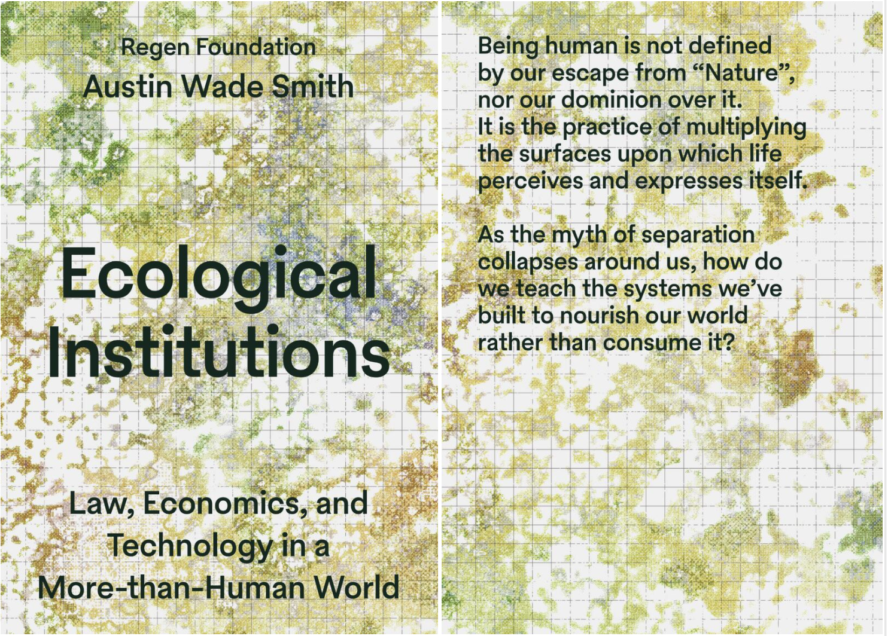

Our greatest coordination challenges emerge from what we cannot help but hold in common. Ecological Institutions is a new world starter kit and design guide to new institutional life forms capable of stewarding living and information systems in right relation.
This essential volume offers a profound upgrade to our social operating system by daring us to undual the false separation between our digital and living worlds, giving rivers, forests, and entire biomes the agency to participate directly in our protocols of civic care. Masterfully bridging ancient wisdom with the cyber commons of tomorrow, this book is a vital read for everyone committed to weaving our many networks into an infinite garden.
— Audrey Tang, Taiwan’s Cyber Ambassador and 1st Digital Minister
As the myth of separation between people and planet collapses, the book traces how our interdependence is encoded in biological, legal, economic, and technical systems. It reframes the commons not as a resource, but as protocols of coordination, co-ownership, and co-governance across different systems. From this perspective, institutions become assemblages of code — structures that can be oriented toward extraction or regeneration.
The book introduces a design framework for building ecological institutions across contexts. It brings together foundational essays, visual systems diagrams, and real-world experiments in governance. The result is a practical and conceptual guide to rethinking how we organize life on a shared planet.